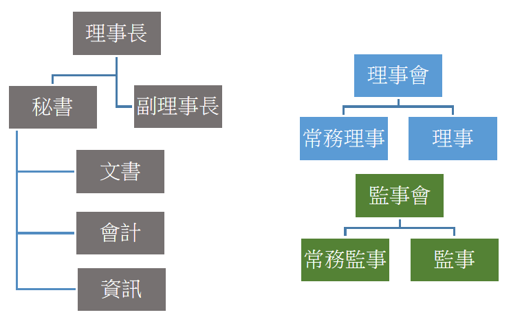

鳳山高中校友會
關於我們
簡介
現任理事長
工作團隊
歷屆理監事
第三屆(現任)
第二屆
第一屆
歷屆傑出校友
第1屆
第2屆
第3屆
第4屆
第5屆
第6屆
第7屆
第8屆
第9屆
第10屆
第11屆
第12屆
第13屆
第14屆
第15屆
第16屆
第17屆
第18屆
歷屆大事紀
第二屆
第一屆
活動花絮
2019
2018
影音專區
文件下載
校友會組織章程
校友會入會申請書
傑出校友選拔表揚辦法
傑出校友推薦表
中華民國鳳山高中校友會
歡迎蒞臨
認識鳳中校友會
過去多年來，鳳山高中校友會在張雅玲董事長的帶領下，延續鳳中「榮譽、勤勞、誠實」校訓，為校友們情感的聯繫建立了穩固基礎。但為進一步符合內政部全國性人民團體法規，「中華民國鳳山高中校友會」在民國105年，正式申請並通過內政部全國性人民團體立案，正式成為合法人民團體組織。未來在服務鳳中校友、師長及同學們，都能夠在此制度架構下持續的推動。
創會時間：民國105年7月23日
現任理事長 張萬邦
鳳中校友會第三屆理事長
民國00年高中部畢業
00學年度鳳中第0屆傑出校友
現職：
工作團隊
